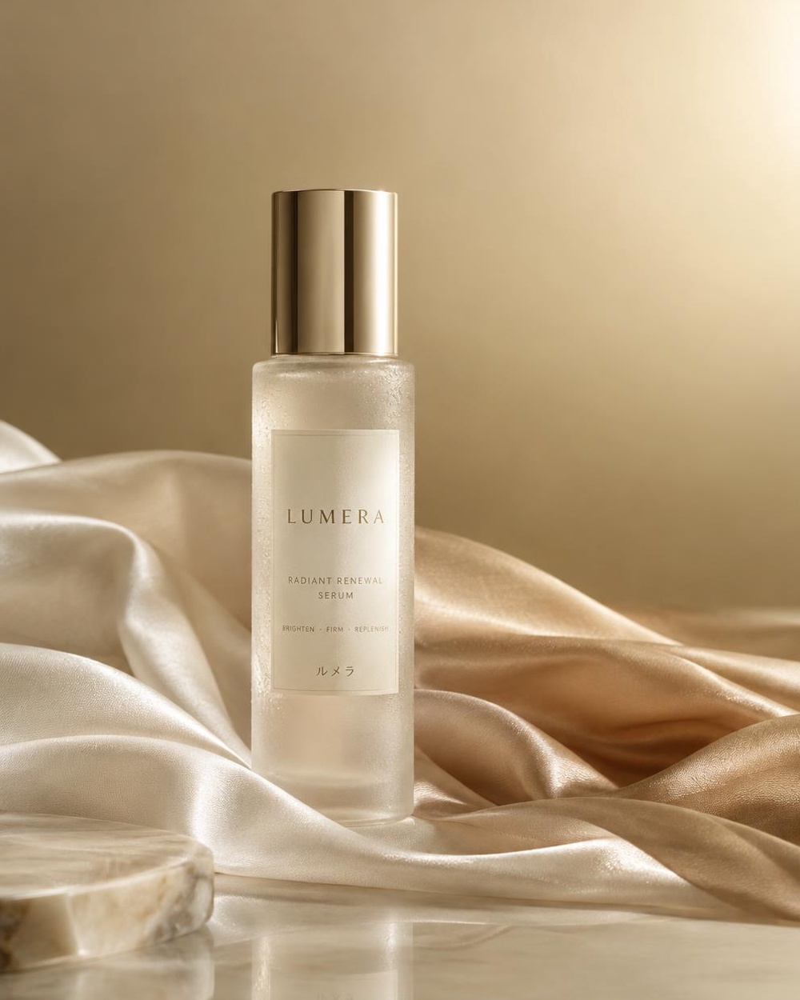
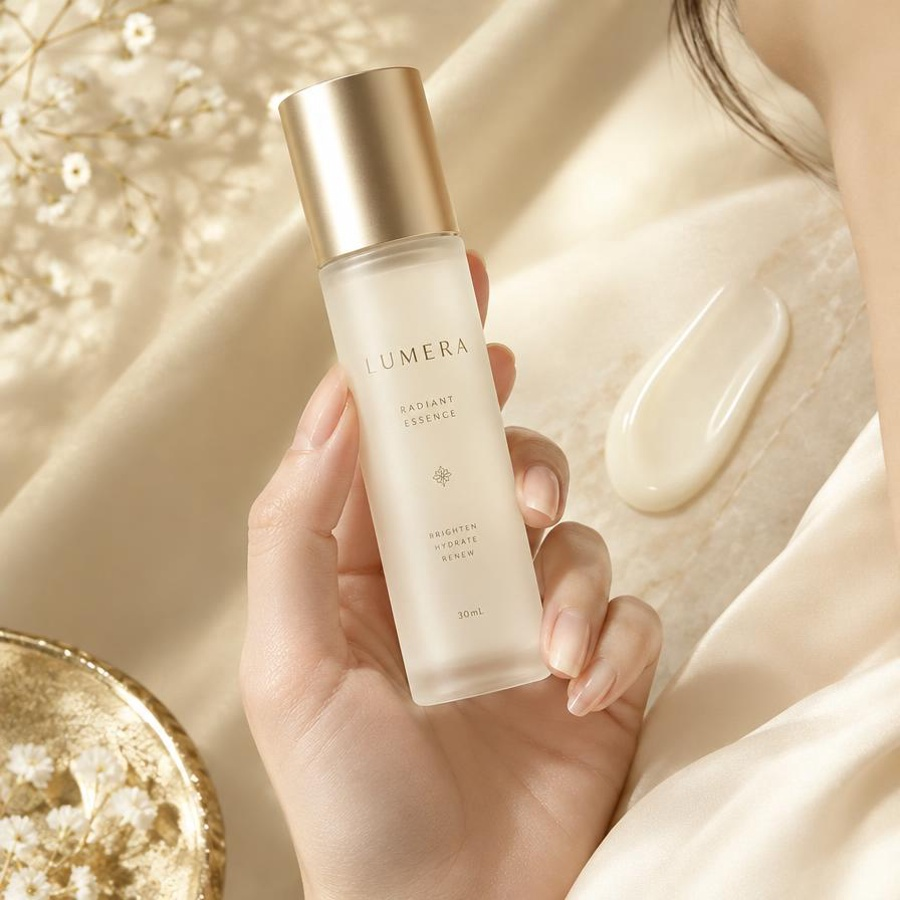
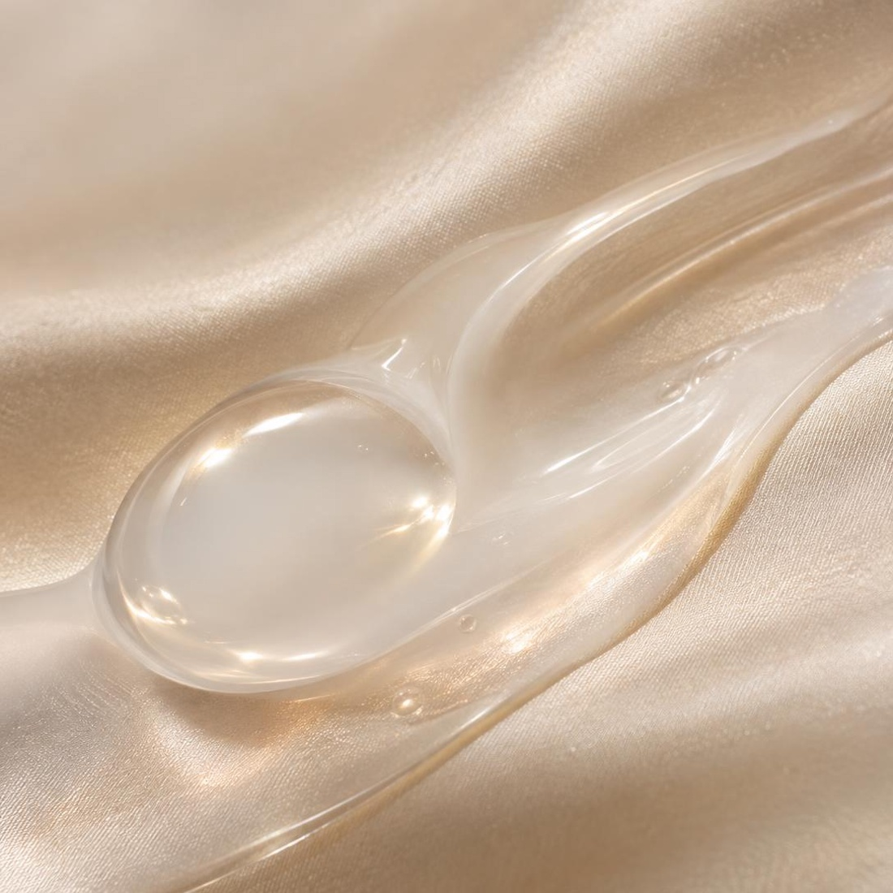
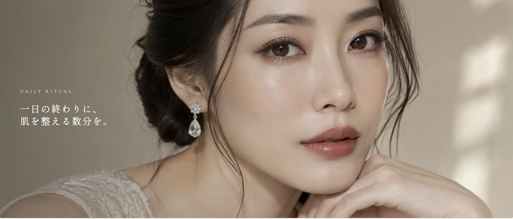

使い始めて三週間ほど。朝、洗面所の鏡の前で「あ、明るい」と声が出ました。何かを足したわけではなく、肌のくすみがすっと引いた感じ。香りがないのも、朝の忙しい時間にありがたいです。
M
M. K
34歳 / 東京都 / 乾燥肌
30mL使用歴 3か月購入済み
LUMÉRA — BRAND PHILOSOPHY
ルメラが目指すのは、表面を飾る美しさではありません。
肌そのものが、光を抱くような透明感です。

RADIANCE SERUM / 30mL
うるおいを与えるだけでは、
肌は輝きません。
私たちは長い時間をかけて、日本の水と、季節の植物と向き合ってきました。 たどり着いた答えは、足し算ではなく引き算。肌のリズムを整え、本来の明るさを呼び戻すという、静かなものでした。
ルメラ ラディアンスセラムは、飾らない処方と、繊細なテクスチャー。まとうたびに、肌が自分の光を思い出していく。 そういう体験でありたいと思っています。
佐倉 澪
LUMÉRA BRAND DIRECTOR
うるおいを抱え込ませるのではなく、肌が自ら光を返す構造へ。内側から満ちた明るさは、時間が経っても曇りません。
足すより、削る。余分なものを置かない処方だから、一滴のテクスチャーが肌の上で静かにほどけていきます。
一夜で変えるのではなく、巡りながら整っていく肌のために。続けるほどに、素の肌が落ち着いていく設計です。
OUR PROMISE
美しさは、飾ることではなく、
整えること。
Beauty is not adorned. It is aligned.
肌の声を聞くこと。必要なものだけを、必要なだけ。ルメラのすべての処方は、そのひとつの姿勢から生まれています。

商品・価格・配送条件は架空の設定です。販売は行っていません。
TEXTURE
とろみのあるテクスチャーが、肌の上でゆっくりほどけていく。 べたつきを残さず、しかし確かに残る、しっとりとした手ざわり。 指先で確かめられる質感まで、丁寧に設計しました。
手のひらを傾けると、ゆっくり動き出すほどの密度。水ではなく、うるおいそのものを一滴に閉じ込めています。
肌に触れた瞬間、するりと薄い膜のように広がります。こすらずとも、指先が自然に滑る軽やかさです。
なじんだあとは、べたつかず、しっとりと落ち着く。上に重ねるアイテムの邪魔をしない仕上がりです。

TEXTURE / MACRO DETAIL
HOW TO USE
朝と夜、毎日のケアに。使用量の目安は2〜3滴です。 季節や肌の状態に合わせて、少量ずつ重ねても。
清潔な肌に、化粧水で整えたあとにお使いください。肌が少ししっとりした状態が、なじみのよいタイミングです。
スポイトを一度ゆっくり押し、手のひらに2〜3滴。両手で軽く包み、体温でほんのり温めてから顔へ。
頬、額、あごの順に、内側から外側へ。最後に手のひら全体で軽く押さえ、首すじまでなじませます。

選んだのは、日本の風土が育てた三つの素材。 どれも主役を張るような強さではなく、肌のリズムを静かに支えるものばかりです。 基材の水も、ミネラル分の少ない国産の軟水を使っています。
生糸から丁寧に抽出した低分子のシルクペプチド。肌の表面に薄いヴェールのように寄り添い、うるおいが逃げる隙間を静かに埋めます。
国産の米ぬかを独自の乳酸菌で発酵させたエキス。くすみの原因に寄り添い、肌本来の明るさが滲むような透明感へ導きます。
古くから日本で親しまれてきた椿の油。肌なじみがよく、酸化に強いのが特長。少量でも、しっとりとした手ざわりが長く続きます。
CAMELLIA / RICE / SILK
FREE FROM
全成分について
参照資料には開閉後の全成分一覧が収録されていません。確認できる配合素材は加水分解シルク・米ぬか発酵エキス・ツバキ種子油です。これは全成分表示ではありません。実際の処方や配合順は未確認です。
以下のレビュー・人物・評価・件数・リピート率はすべて架空のデザインサンプルです。
効果を約束するのではなく、日々のなかで見つけた小さな変化を。 ルメラを使ってくださっている方々の、ありのままの声を集めました。
4.8/ 5.0
216件のレビュー
リピート率 78%
使い始めて三週間ほど。朝、洗面所の鏡の前で「あ、明るい」と声が出ました。何かを足したわけではなく、肌のくすみがすっと引いた感じ。香りがないのも、朝の忙しい時間にありがたいです。
M. K
34歳 / 東京都 / 乾燥肌
とろみがあるのに、いつまでもベタベタしないのが不思議。重ねるクリームの邪魔をしないので、季節を問わず使えています。
A. S
41歳 / 神奈川県 / 混合肌
50mL / 使用歴 8か月
定期便で続けています。肌の調子が落ち着いてきたせいか、ファンデーションの厚みが減りました。地味だけど、それが一番うれしい変化です。
Y. T
29歳 / 大阪府 / 敏感肌
30mL / 使用歴 1年
ボトルが美しいので、洗面台に置いておくだけで気分が上がります。スポイトが一度で適量を吸ってくれるのも、地味に助かっています。
R. N
37歳 / 愛知県 / 普通肌
50mL / 使用歴 5か月
※ レビューは架空のサンプルです。実在する方の体験談や効果の証明ではありません。
同じセラムを試してみるデモフォーム：実際の注文・送信はできません。個人情報は入力せず、テスト用の値でお試しください。
APPLY — LUMÉRA
入力と容量選択をお試しいただくデモです。外部への送信・保存・注文・決済・メール返信は行いません。
全国送料無料
ご注文はヤマト運輸でお届けします。
定期便はいつでも解約可
お届け回数の変更・停止もお電話で。
肌のご相談も承ります
平日10:00〜18:00 ／ 電話窓口はありません（デモ）
LUMÉRA CUSTOMER DESK
電話窓口はありません（デモ）
平日 10:00〜18:00（土日祝を除く）